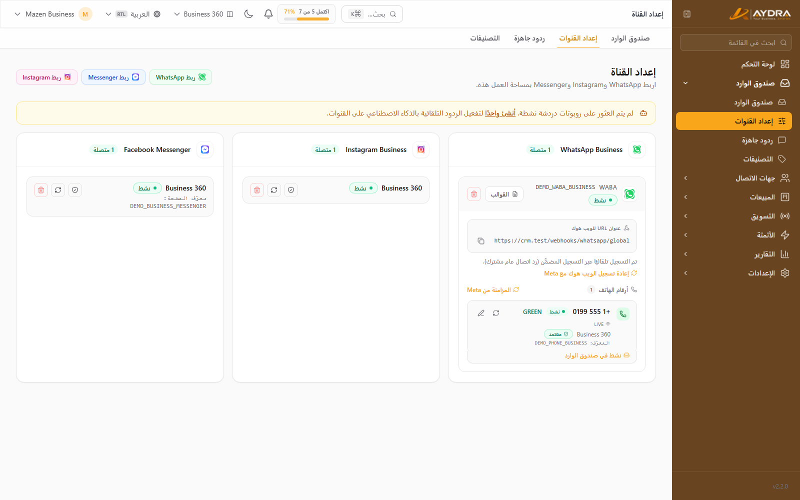

تشغيل تطبيق واتساب للأعمال مع AYDRA
لديك رقم على تطبيق WhatsApp Business وتريد استخدامه من AYDRA مع فريقك، دون أن تفقد التطبيق على هاتفك؟ ميزة «تشغيل مع تطبيق واتساب للأعمال» (Coexistence) تربط الرقم نفسه بـ Cloud API وتُبقي التطبيق يعمل بشكل طبيعي. الرسائل تصل إلى AYDRA، وتظل قادرًا على الرد من هاتفك.
قبل أن تبدأ: هذه الميزة متاحة لخطتي Pro وBusiness فقط. إن كنت على خطة أقل، يمكنك الترقية من الإعدادات ← الاشتراك ثم العودة لإتمام الربط.
ما الفرق بينها وبين الربط العادي؟
| العنصر | الربط العادي (Cloud API) | التشغيل مع تطبيق واتساب للأعمال |
|---|---|---|
| الرقم على تطبيق WhatsApp Business | يجب حذفه من التطبيق | ✅ يبقى يعمل كما هو |
| الرد من الهاتف | غير ممكن | ✅ ممكن |
| الرسائل المرسلة من الهاتف | — | ✅ تظهر في صندوق الوارد مع شارة «من تطبيق WhatsApp Business» |
| استيراد جهات الاتصال وسجل المحادثات | — | ✅ لمرة واحدة خلال 24 ساعة (بموافقتك) |
| الخطة المطلوبة | جميع الخطط | Pro و Business |
الربط في خطوات

- افتح صندوق الوارد ← إعداد القنوات.
- تحت قسم واتساب اضغط ربط رقم WhatsApp Business حالي.
- سجّل الدخول بحساب Meta الذي يملك الرقم، ثم اختر الرقم الموجود على تطبيق WhatsApp Business.
- أكمل الخطوات حتى رسالة النجاح. لا تحذف التطبيق.
- ستظهر لوحة خاصة أسفل بطاقة الرقم فيها شارة «تطبيق WhatsApp Business» وحالة المزامنة.
إن كان الزر غير ظاهر أصلًا، فالميزة مغلقة لخطتك الحالية. أما إن ظهر الزر ثم رجع بك إلى صفحة الإعداد، فتأكد أن رقمك مُفعّل فعلًا على تطبيق WhatsApp Business وليس تطبيقًا عاديًا.
استيراد جهات الاتصال وسجل المحادثات
بعد الربط مباشرة تظهر لك لوحة موافقة داخل بطاقة الرقم. الاستيراد اختياري ويحتاج موافقتك الصريحة. إن وافقت، تُنقل جهات اتصال التطبيق وسجل المحادثات حتى 180 يومًا إلى AYDRA.
- اقرأ نص الموافقة، ثم اضغط استيراد بياناتي. (أو تخطٍّ الآن إن لم ترغب.)
- يبدأ الاستيراد تلقائيًا في الخلفية — قد يأخذ بعض الوقت حسب حجم السجل.
- تتابع الحالة من اللوحة نفسها: «الاستيراد قيد التنفيذ» ثم «اكتمل الاستيراد».
نافذة الاستيراد 24 ساعة فقط. إن أضفت الميزة ولم توافق خلال 24 ساعة، تُغلق النافذة ويلزم فصل الرقم من التطبيق وإعادة ربطه لتبدأ النافذة من جديد.
الاستيراد صامت ومقصود. المحادثات المستوردة لا تُنشئ إشعارات ولا عدّاد رسائل غير مقروءة ولا تُشغّل أتمتة أو ردودًا تلقائية — لأنها سجل قديم وليست رسائل جديدة.
عندما يمتلئ حد جهات الاتصال
جهات اتصال تطبيقك تُستورد مباشرة مع احترام حد جهات الاتصال في خطتك. إن كان الحساب قد بلغ الحد، فلن تُهمل أي جهة اتصال: توضع في قائمة انتظار آمنة حتى تتوفّر مساحة.
- ستظهر في اللوحة رسالة بعدد جهات الاتصال المنتظرة.
- اضغط ترقية الخطة لرفع السقف، أو أفرِغ مساحة بحذف جهات اتصال غير مطلوبة.
- ثم اضغط إعادة محاولة الاستيراد لاستيعاب المنتظرة.
الرد من الهاتف داخل AYDRA
عندما يرد فريقك على العميل من تطبيق WhatsApp Business على الهاتف، تُسجَّل الرسالة في صندوق الوارد كرسالة صادرة وتظهر معها شارة خضراء صغيرة: «من تطبيق WhatsApp Business». هذا يمنع الالتباس مع ردود الوكيل داخل AYDRA. الرسائل المكررة من التطبيق تُدمج تلقائيًا فلا تظهر مرتين.
الحالات التي قد تظهر على الرقم
| الحالة | المعنى | ما تفعله |
|---|---|---|
| نشط | الرقم مربوط ويعمل على التطبيق وAYDRA | لا شيء |
| متوقف مؤقتًا | أبلغت Meta أن الرابط لم يعد قائمًا؛ توقف استقبال الرسائل الجديدة مؤقتًا | افتح تطبيق WhatsApp Business ← الإعدادات ← الحساب ← منصة الأعمال وأعد ربط الرقم. بياناتك محفوظة |
| غير متصل | فصلت الرقم من AYDRA بإرادتك | أعد الربط من نفس الصفحة. المحادثات محفوظة |
فصل الرقم
الفصل من AYDRA لا يحذف أي بيانات: تبقى المحادثات والرسائل مقروءة، لكن الرسائل الجديدة تتوقف عن الوصول إلى AYDRA.
- من لوحة الرقم اضغط فصل هذا الرقم ثم أكّد.
- إن أردت التوقف الكامل عن Cloud API، فأكمل من التطبيق: الإعدادات ← الحساب ← منصة الأعمال ← فصل الحساب.
لا تُعدّم أي شيء حفاظًا على بياناتك. إن أردت العودة لاحقًا، أعد الربط وستجد محادثاتك القديمة كما هي.
أسئلة شائعة
| السؤال | الإجابة |
|---|---|
| هل يفقد الهاتف أي رسالة؟ | لا. الرقم يعمل على الاثنين معًا، والرسائل تصل إلى AYDRA وإلى التطبيق. |
| هل تُستورد رسائل أقدم من 180 يومًا؟ | لا. سجل المحادثات المتاح للاستيراد يصل إلى 180 يومًا. |
| لماذا لا أرى زر الموافقة؟ | إما أن الخطة لا تشمل الميزة، أو أن نافذة الـ24 ساعة أُغلقت، أو أن الاستيراد بدأ بالفعل. |
| هل الاستيراد يوقظ العملاء؟ | لا. لا يُرسَل أي شيء، ولا تُشغَّل أتمتة على البيانات المستوردة. |
| هل يمكن تأجيل الاستيراد؟ | نعم، عبر «تخطٍّ الآن». لكن لا يمكن طلبه لاحقًا بعد إغلاق نافذة الـ24 ساعة دون إعادة ربط. |
بعد إنهاء هذا الدليل سيكون رقمك يعمل على تطبيق واتساب للأعمال وعلى AYDRA معًا. راجع صندوق الوارد لإدارة المحادثات، والإعداد والتكاملات لباقي القنوات.